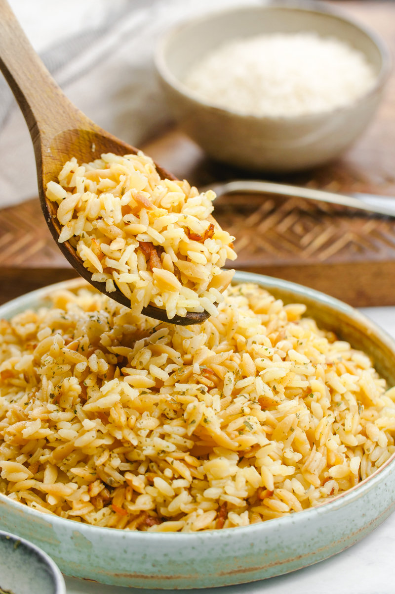

Rice Pilaf

Description
Rice pilaf is a dish that consists of rice boiled and cooked alongside various spices. It is somewhat easier to cook, though the flavors are more subtle.
My recipe is basically almost exactly the same as my Rice Biryani with a few steps/ingredients skipped or changed.
If you have never cooked rice on a stove before, you probably won't get this recipe right, since I have no exact measurements or times to follow, only rough estimates. The gaps in the instructions should be filled in by your own instincts or skills or whatever.
The more you cook rice on a stove, the more you get a feel for the right amount of water to rice. I love this dish and I often cook it, but I still get it wrong here and there. If you try this recipe, make sure you check on your rice often and adjust if it seems too dry or too wet. Good luck!
Ingredients
- 250 grams of White Basmati Rice / White Jasmine Rice
- A heaping teaspoon of Biryani Masala
- Half a teaspoon of Garam Masala
- Half a teaspoon of Turmeric
- One Onion (Peeled, Halved, Thinly Sliced)
- One Tomato (Peeled, Halved, Thinly Sliced)
- One Chili Pepper (Sliced down the middle)
- Two Bay Leaves
- A Star Anise
- 100 mL of Coconut Cream (Not Coconut Water)
- One Cube of Chicken Bouillon
- 1 tablespoon of Ginger Garlic Paste
Steps
- Wash rice until water runs clear. Let soak.
- In a deep pot, saute the onions, tomatoes, chili pepper, bay leaves, and the star anise, until onion is translucent and slightly browned.
- Deglaze with about half a cup of water and dump in the bouillon cube. The heat should be medium-low.
- Once the bouillon cube is dissolved, dump in the coconut cream, all the spices, and the ginger garlic paste.
- Stir the contents of the pot once in a while. When the coconut cream turns a little bit oily, kill the heat.
- Grab the container the rice is soaking in, and get rid of as much water as you can. Grab a cup or any other suitable container of water.
- Dump in the rice and mix. Pour in water until the surface is an inch or two above the rice. Be careful, as if you put too much water the rice will be soggy and sticky. If it has too little water, it might stick to the pot and burn. But, you can always add a few splashes of water later if you think it is too dry.
- I usually set a timer for 15 minutes, and set the heat on the lowest possible setting. Cover the pot and if there are holes on the lid for steam, cover those with a clean folded towel. After the 15 minutes are up, I check on the rice. If it is too dry, I kill the heat and add a little bit of water. If it is a bit wet, I remove the lid and let the water steam off for a bit.
- Remove and let rest for at least 10 minutes. Fluff with a spatula and serve. Enjoy!
Back to Home Page